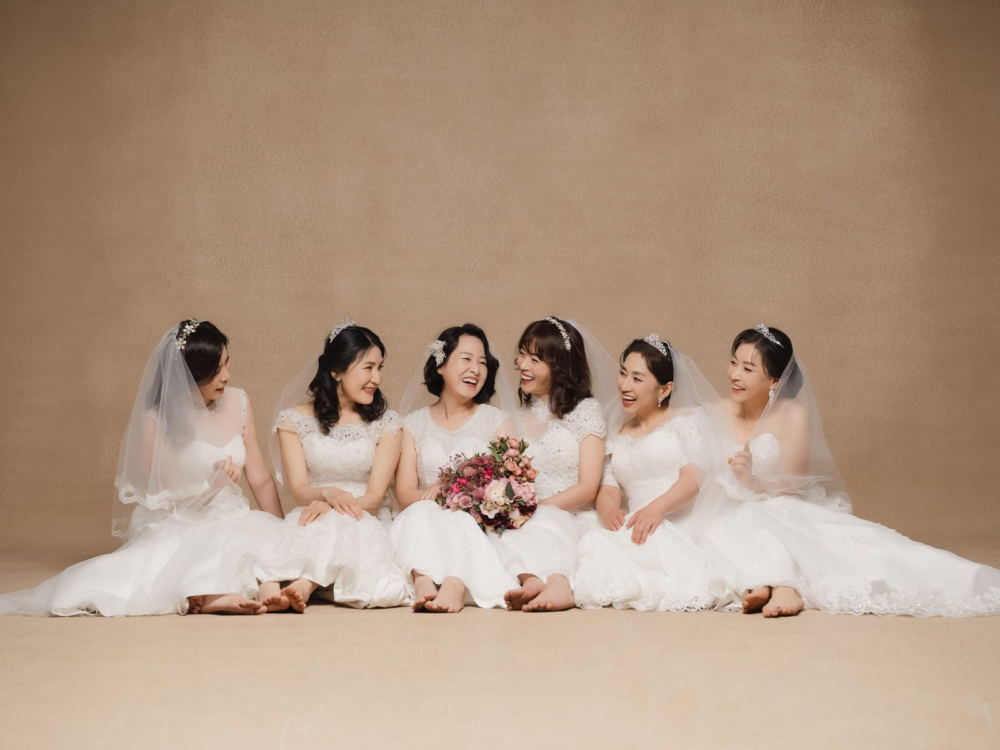
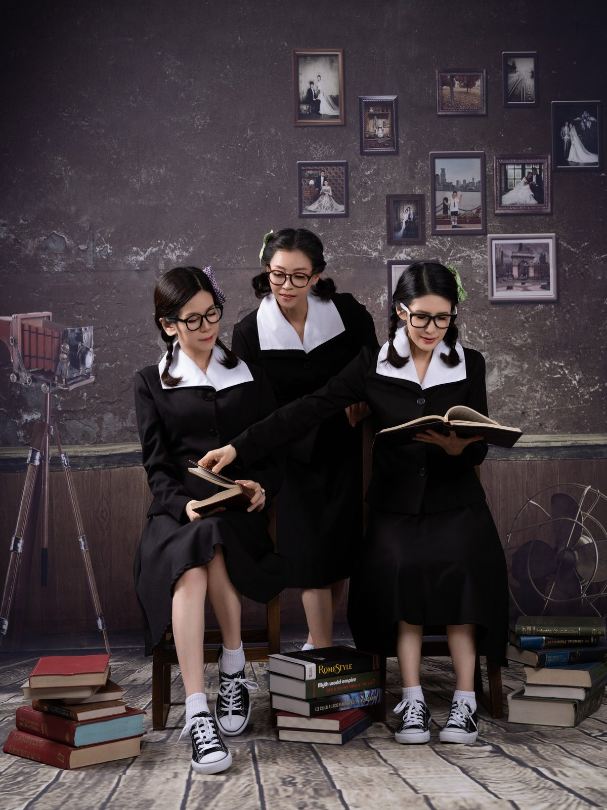
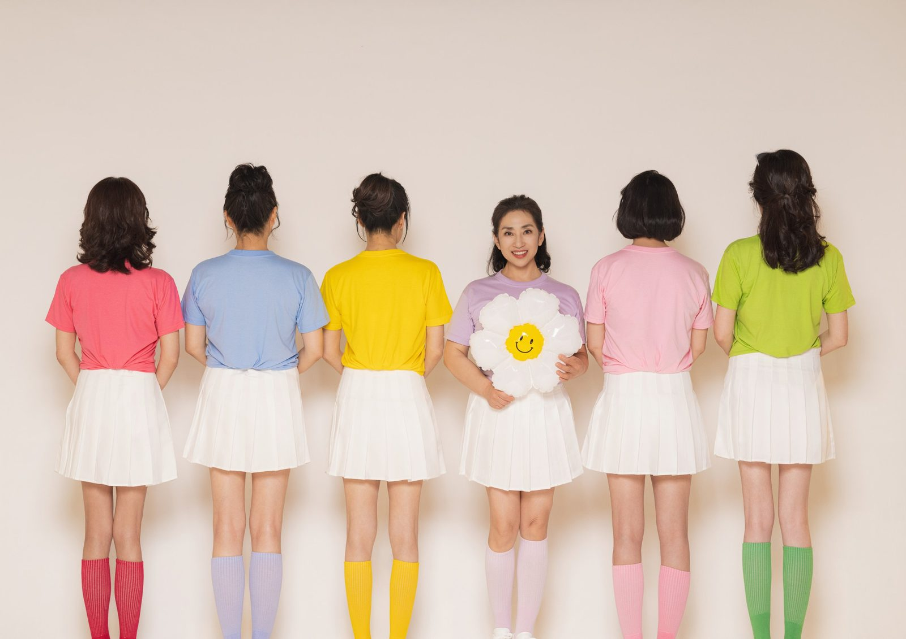
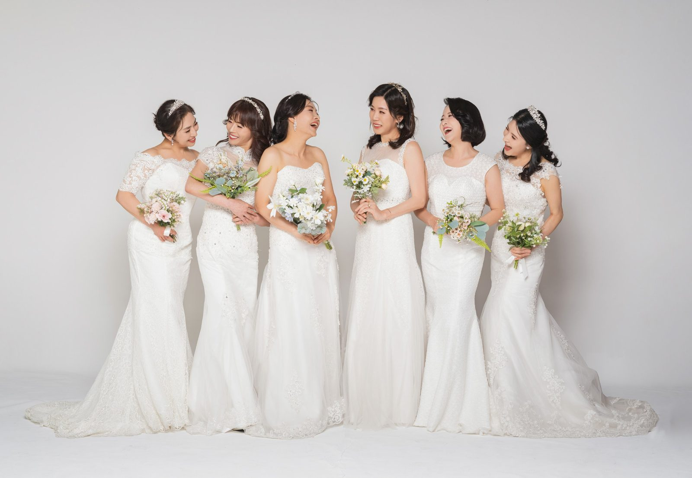
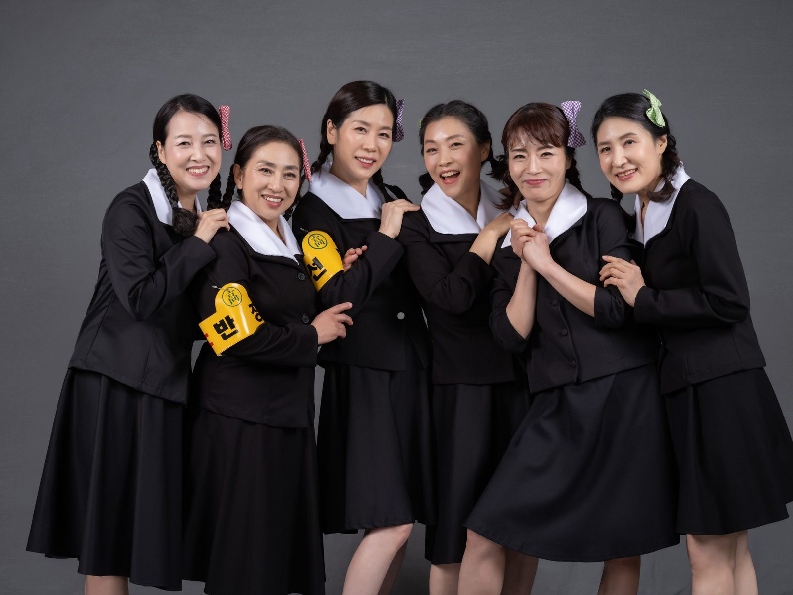
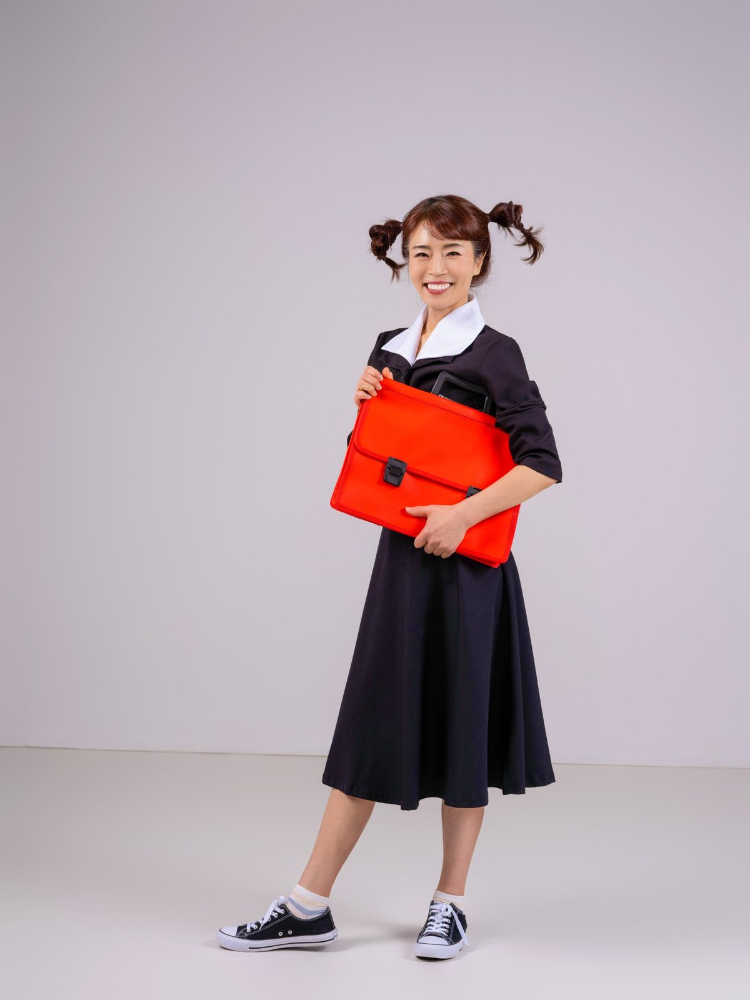
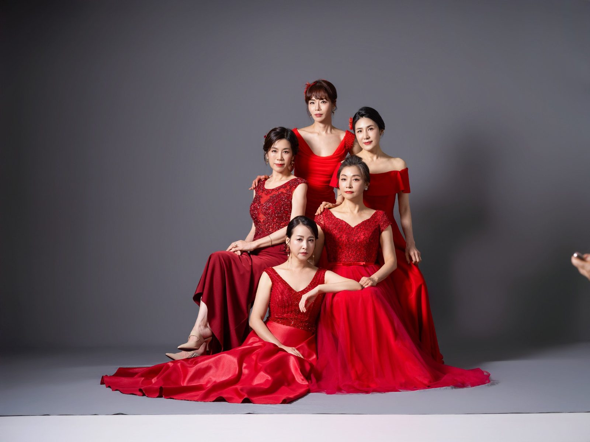
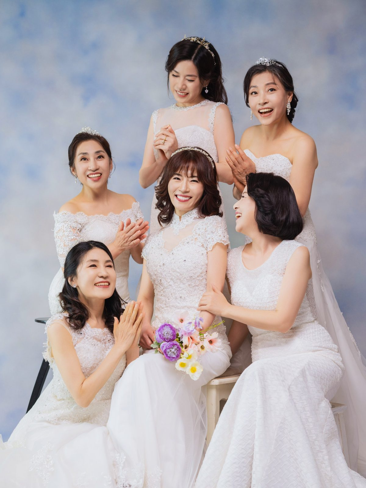
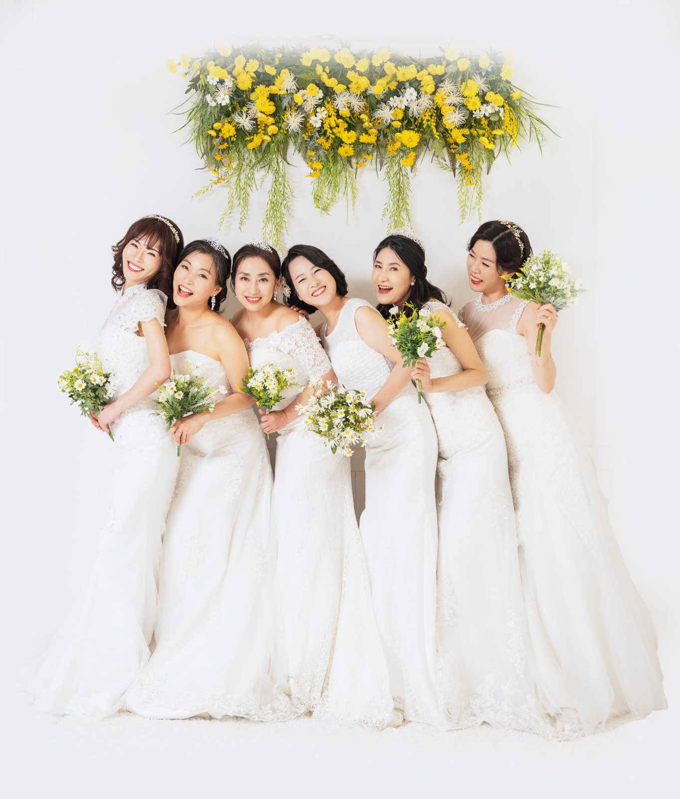

창원 우정사진 — 오십 년 친구와 다시 교복을 입는 날
2026-10-20 발행
창원 우정사진은 오래된 친구들과 한자리에 서는 촬영입니다. 가족사진과 다른 점이 하나 있습니다. 가족은 어쩌다 한자리에 모이지만, 친구는 스스로 시간을 내어 모입니다. 그래서 그 자리는 늘 조금 들떠 있습니다. 그 들뜸이 사진에 그대로 남습니다.

사랑이야기 스튜디오 창원점은 경남 창원시 성산구 원이대로 652, 상남동 롯데빌딩 2층에 있습니다. 그동안 찍어 온 우정사진이 700장 가까이 됩니다. 교복을 입은 친구들, 드레스를 맞춰 입은 친구들, 같은 티셔츠를 입고 장난을 치는 친구들까지. 같은 주제도 팀마다 전혀 다른 사진이 됩니다.
우정사진을 찾으시는 분들은 대개 마흔에서 예순 사이입니다. 동창회를 앞두고, 오랜만에 만난 친구와, 혹은 환갑을 맞은 친구를 위해 오십니다. 이유는 제각각이지만 사진을 보고 나서 하는 말은 비슷합니다. 우리가 이렇게 웃었구나, 하고.

가장 인기 있는 컨셉은 교복입니다. 검은 교복에 빨간 책가방, 양갈래 머리, 안경까지 맞추면 그 시절로 돌아간 것처럼 보입니다. 처음에는 쑥스러워하시던 분들도 책을 펴 들고 서로를 보는 순간 표정이 달라집니다. 그 표정은 연기로 나오지 않습니다.

드레스도 많이 입으십니다. 결혼식 때 입었던 드레스와는 다른, 조금 더 자유로운 드레스입니다. 색을 맞추거나, 한 사람만 다른 색을 입거나, 전부 다른 색을 입거나. 어느 쪽이든 친구들끼리 정해 오시면 그 팀만의 사진이 됩니다. 의상실에 준비된 드레스 중에서 함께 골라 입으실 수 있습니다.

옷을 맞추는 일이 부담스럽다면 같은 티셔츠 한 장이면 충분합니다. 색만 맞추고 나머지는 각자 편한 대로 입으셔도 됩니다. 우정사진에서 중요한 것은 옷이 아니라 얼굴입니다. 옷이 단순할수록 표정이 더 잘 보입니다. 흰 티셔츠 한 장이면 충분한 날도 많습니다. 대신 신발까지 맞추면 사진이 한층 정돈됩니다. 운동화를 같은 색으로 맞추는 것만으로도 팀처럼 보입니다.
인원은 네 명에서 여덟 명 사이가 가장 많습니다. 그 이상이면 두 줄로 서거나 계단을 이용합니다. 인원이 많을수록 한 사람이 눈을 감는 일이 생기기 때문에, 같은 자리에서 두어 번 더 찍습니다. 눈 감은 사진은 고르실 때 걸러 드립니다.

촬영은 보통 한 시간에서 두 시간 사이입니다. 옷을 갈아입는 시간이 생각보다 오래 걸립니다. 한 컨셉에 서너 벌을 준비하시면 사진의 폭이 넓어집니다. 교복, 드레스, 그리고 평소 옷. 이 세 가지면 충분합니다.

메이크업도 함께 합니다. 우정사진은 얼굴이 중심이기 때문에 화장이 사진의 분위기를 크게 좌우합니다. 한 분씩 돌아가며 하고, 그동안 다른 분들은 옷을 고르거나 사진을 구경합니다. 준비하는 시간도 그 자체로 즐겁습니다.
포즈는 정해 두지 않아도 됩니다. 서로 이야기하다 보면 자연스러운 자리가 나옵니다. 팔짱을 끼고, 어깨를 맞대고, 한 사람을 가운데 세우고. 그중에서 가장 잘 나온 한 장을 크게 남기시면 됩니다. 우정사진은 한 장을 크게 남기는 편이 좋습니다. 여러 장을 작게 나누는 것보다, 다 같이 웃는 한 장이 거실에 걸렸을 때 더 오래 이야깃거리가 됩니다.

사진을 고를 때는 다 같이 웃는 컷을 먼저 보세요. 우정사진은 한 사람의 표정보다 여럿의 표정이 함께 살아 있는 사진이 좋습니다. 그다음에 장난스러운 컷, 마지막으로 차분한 컷을 고르시면 됩니다.
액자는 가로로 긴 사진이 잘 어울립니다. 친구들과 함께 서는 사진은 가로 구도가 자연스럽기 때문입니다. 거실에 걸기보다는 각자 방에 두거나, 작게 나눠 한 장씩 가져가는 방법도 좋습니다. 같은 사진을 나눠 갖는 것만으로도 그날이 오래 기억됩니다.

우정사진은 예약할 때 인원과 컨셉을 알려 주시면 준비가 빠릅니다. 교복을 입을지, 드레스를 입을지에 따라 준비할 옷과 소품이 달라집니다. 촬영 날짜는 친구들의 일정이 가장 어려우니, 두세 개 후보 날짜를 가지고 문의하시면 좋습니다.
오랜만에 만나는 친구라면 촬영 전에 식사 약속을 먼저 잡으세요. 밥을 먹고 오시면 표정이 훨씬 편합니다. 촬영이 끝난 뒤에는 김스카페에서 사진을 함께 보며 이야기를 이어가실 수 있습니다.

우정사진을 찍는 이유는 사진 자체보다 그날 하루입니다. 오랜만에 모여 옷을 고르고, 서로의 화장을 봐 주고, 웃다가 배가 아파지는 시간. 사진은 그 시간의 마지막에 남는 것입니다. 그래서 우정사진은 결과보다 과정이 더 오래 남습니다.
친구 중 한 분이 멀리 살아도 괜찮습니다. 한 번 정한 날짜에 다 같이 모이기만 하면 됩니다. 오히려 그날을 핑계로 모두가 모이게 됩니다. 그 핑계가 필요했던 것일지도 모릅니다. 날짜를 정할 때는 한 사람에게만 연락을 맡기지 마세요. 단체 대화방에서 다 같이 정하면 그때부터 즐거움이 시작됩니다.

창원 우정사진은 특별한 날이 아니어도 됩니다. 그냥 보고 싶어서, 오래 만나지 못해서, 혹은 다음에 언제 만날지 모르겠어서. 이유는 아무래도 좋습니다. 사진 한 장이 그날의 약속을 대신 기억해 줍니다.
서른일곱 해 동안 사진을 찍어 오면서 배운 것이 있습니다. 사람은 혼자일 때보다 함께일 때 훨씬 잘 웃습니다. 그래서 우정사진을 찍을 때는 친구들끼리 이야기하게 두는 편입니다. 카메라는 그 옆에서 조용히 기다립니다.
사진을 찍고 나면 다들 같은 말을 합니다. 왜 진작 안 찍었을까. 그 말을 들을 때마다 다음 팀을 기다리게 됩니다. 준비는 생각보다 간단합니다. 친구들에게 연락하고, 날짜 하나를 정하면 됩니다.
소품은 하나면 충분합니다. 꽃다발, 풍선, 책, 혹은 그 시절 즐겨 먹던 과자 한 봉지. 사진에서 손에 들 것이 있으면 어색함이 줄어듭니다. 무엇을 들지 고민된다면 서로에게 편지를 한 장씩 써 오시는 것도 좋습니다. 그 편지는 사진이 끝난 뒤에도 남습니다.
의령 야외촬영장에서 찍는 우정사진도 있습니다. 잔디밭과 한옥을 배경으로 걸어오는 사진, 나무 아래에 둘러앉은 사진은 실내와 또 다른 분위기가 납니다. 봄과 가을에는 야외를 먼저 권합니다. 빛이 좋은 날은 실내 조명이 따라오지 못합니다.
동창회 시즌은 봄과 가을입니다. 그때는 주말 예약이 먼저 차기 때문에 두세 달 전에 문의하시는 편이 좋습니다. 날짜가 정해지면 인원과 컨셉, 옷 사이즈를 미리 알려 주세요. 당일에 고르면 시간이 모자랍니다.
자주 묻는 질문
Q. 우정사진은 몇 명부터 찍을 수 있나요?
A. 네 명 정도부터 편하게 촬영하실 수 있습니다. 인원이 많으면 두 줄로 서거나 계단을 이용해 함께 담습니다.
Q. 교복이나 드레스도 준비되어 있나요?
A. 창원점 의상실에 촬영용 의상이 준비되어 있습니다. 상담 때 인원과 컨셉을 알려 주시면 함께 골라 드립니다.
Q. 촬영 시간은 얼마나 걸리나요?
A. 보통 한 시간에서 두 시간 사이입니다. 옷을 갈아입는 시간이 포함되며, 컨셉 수에 따라 달라집니다.

오시는 곳
사랑이야기창원점
- 주소 경남 창원시 성산구 원이대로 652, 상남동 롯데빌딩 2층
- 전화 055-287-8022
- 영업시간 오전 10:00 ~ 오후 7:00
- 예약 전화 상담 · 카카오톡 채널
- 주차 건물 지하 주차장
김작가사진이야기 의령
- 주소 경남 의령군 궁류면 청정로 1188
- 전화 055-574-3706
- 영업시간 오전 10:00 ~ 오후 7:00
- 예약 전화 상담 · 카카오톡 채널
- 주차 전용 주차장
이 글에 한마디
댓글창을 준비하고 있습니다. 그동안 궁금한 점은 카카오채널로 남겨 주시면 바로 답변드립니다.
카카오채널로 한마디 남기기